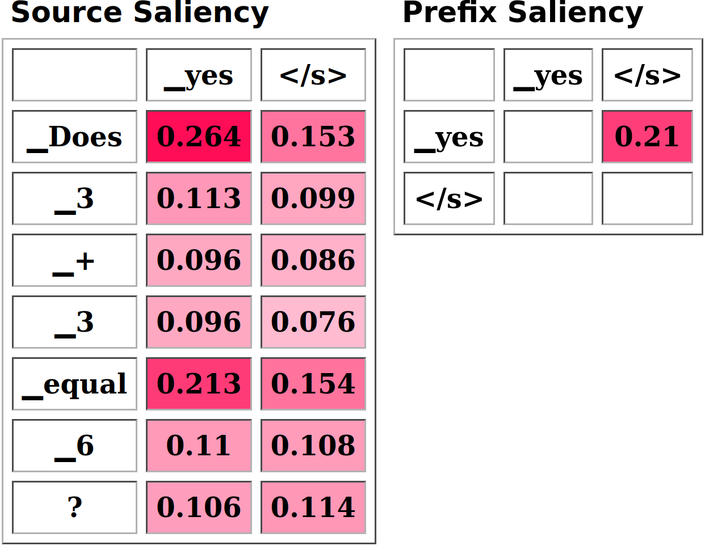
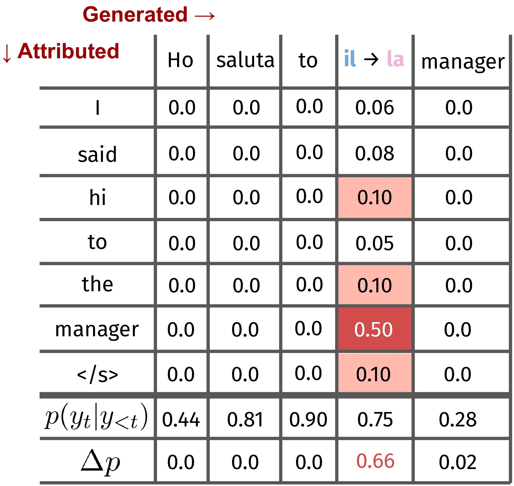

3 Attributing Language Model Generations with the Inseq Toolkit
As in manufacture so in science, retooling is an extravagance to be reserved for the occasion that demands it. The significance of crises is the indication they provide that an occasion for retooling has arrived.
– Thomas S. Kuhn, The Structure of Scientific Revolutions (1970)
Recent years saw an increase in studies and tools aimed at improving our behavioral or mechanistic understanding of neural language models (Belinkov and Glass, 2019).
Many studies applied such techniques to modern deep learning architectures, including transformers (Vaswani et al., 2017), leveraging gradients (Baehrens et al., 2010; Sundararajan et al., 2017), attention patterns (Xu et al., 2015; Clark et al., 2019) and input perturbations (Zeiler and Fergus, 2014; Feng et al., 2018) to quantify input importance, often leading to controversial outcomes in terms of faithfulness, plausibility and overall usefulness of such explanations (Adebayo et al., 2018; Jain and Wallace, 2019; Jacovi and Goldberg, 2020; Zafar et al., 2021).
However, input attribution techniques have mainly been applied to classification settings (Atanasova et al., 2020; Wallace et al., 2020; Madsen et al., 2022; Chrysostomou and Aletras, 2022), with relatively little interest in the more convoluted mechanisms underlying generation. Classification attribution is a single-step process resulting in one importance score per input token, often allowing for intuitive interpretations in relation to the predicted class. Sequential attribution1 instead involves a computationally expensive multi-step iteration producing a matrix \(A_{ij}\) representing the importance of every input \(i\) in the prediction of every generation outcome \(j\) (Figure 3.1).
Moreover, since previous generation steps causally influence following predictions, they must be dynamically incorporated into the set of attributed inputs throughout the process. Lastly, while classification typically involves a limited set of classes and simple output selection (e.g., argmax after softmax), generation often operates with large vocabularies and non-trivial decoding strategies (Eikema and Aziz, 2020). These differences limited the use of input attribution methods for generation settings, with relatively few works improving attribution efficiency (Vafa et al., 2021; Ferrando et al., 2022) and the informativeness of explanations (Yin and Neubig, 2022).
Having established a theoretical background on input attribution methods in Section 2.2, we introduce Inseq, a Python library that democratizes access to interpretability analyses of generative language models. Inseq centralizes access to a broad set of input attribution methods, sourced in part from the Captum (Kokhlikyan et al., 2020) framework, enabling a fair comparison of different techniques for all sequence-to-sequence and decoder-only models in the popular 🤗 transformers library (Wolf et al., 2020). Thanks to its intuitive interface, users can easily integrate interpretability analyses into sequence generation experiments with just 3 lines of code (Figure 3.2). Nevertheless, Inseq is also highly flexible, including cutting-edge attribution methods with built-in post-processing features (Section 3.2.2), supporting customizable attribution targets and enabling constrained decoding of arbitrary sequences (Section 3.2.3).
import inseq
# Load model and attrib. method
model = inseq.load_model(
"google/flan-t5-base",
"integrated_gradients"
)
# Answer and attribute generation
attr_out = model.attribute(
"Does 3 + 3 equal 6?",
attribute_target=True
)
# Visualize the attribution,
# apply token-level aggregation
attr_out.show()

In terms of usability, Inseq greatly simplifies access to local and global explanations, offering built-in support for a command-line interface (CLI), optimized batching that enables dataset-wide attribution, and various methods for visualizing, serializing, and reloading attribution outcomes and generated sequences (Section 3.2.4). Ultimately, Inseq aims to make sequence models first-class citizens in interpretability research and drive future advances in interpretability for generative applications.
3.2 Design
Inseq combines sequence models sourced from 🤗 transformers (Wolf et al., 2020) and attribution methods mainly sourced from Captum (Kokhlikyan et al., 2020). While only text-based tasks are currently supported, the library’s modular design would enable the inclusion of other modeling frameworks, e.g. fairseq (Ott et al., 2019), and modalities (e.g. speech) without requiring substantial redesign. Optional dependencies include 🤗 datasets (Lhoest et al., 2021) and Rich.2 Figure 3.3 presents the Inseq hierarchy of models and attribution methods. The model-method connection enables out-of-the-box attribution using the selected method. Framework-specific and architecture-specific classes enable the extension of Inseq to new modeling architectures and frameworks.
3.2.1 Guiding Principles
Research and Generation-oriented: Inseq should support interpretability analyses of a broad set of sequence generation models without focusing narrowly on specific architectures or tasks. Moreover, the inclusion of new, cutting-edge methods should be prioritized to enable fair comparisons with well-established ones.
Scalable: The library should provide an optimized interface to a wide range of use cases, models and setups, ranging from interactive attributions of individual examples using toy models to compiling statistics of large language models’ predictions for entire datasets.
Beginner-friendly: Inseq should provide built-in access to popular frameworks for sequence generation modeling and be fully usable by non-experts at a high level of abstraction, providing sensible defaults for supported attribution methods.
Extensible: Inseq should support a high degree of customization for experienced users, with out-of-the-box support for user-defined solutions to enable future investigations into models’ behaviors.
3.2.2 Input Attribution and Post-processing
| Method | Source | \(f(l)\) | |
|---|---|---|---|
| G | (Input ×) Gradient | Simonyan et al. (2014) | ✅ |
| DeepLIFT | Shrikumar et al. (2017) | ✅ | |
| GradientSHAP | Lundberg and Lee (2017) | ❌ | |
| Integrated Gradients | Sundararajan et al. (2017) | ✅ | |
| Discretized IG | Sanyal and Ren (2021) | ❌ | |
| Sequential IG | Enguehard (2023) | ❌ | |
| I | Attention Weights | Bahdanau et al. (2015) | ✅ |
| P | Occlusion (Blank-out) | Zeiler and Fergus (2014) | ❌ |
| LIME | Ribeiro et al. (2016) | ❌ | |
| Value Zeroing | Mohebbi et al. (2023) | ✅ | |
| ReAGent | Zhao and Shan (2024) | ❌ | |
| S | (Log) Probability | - | |
| Softmax Entropy | - | ||
| Target Cross-entropy | - | ||
| Perplexity | - | ||
| KL Divergence | - | ||
| Contrastive Logits/Prob. \(\Delta\) | Yin and Neubig (2022) | ||
| \(\mu\) MC Dropout Prob. | Gal and Ghahramani (2016) | ||
| PCXMI | Fernandes et al. (2023) | ||
| In-context PVI | Lu et al. (2023) |
At its core, Inseq provides a simple interface for applying input attribution techniques to sequence generation tasks. We categorize methods in three groups, gradient-based, internals-based and perturbation-based, depending on their underlying approach to importance quantification.3 Table 3.1 presents the complete list of supported methods. Aside from popular model-agnostic methods, Inseq notably provides built-in support for attention weight attribution and a range of cutting-edge methods not supported in any other toolkit, such as Discretized Integrated Gradients (Sanyal and Ren, 2021), Sequential Integrated Gradients (Enguehard, 2023), Value Zeroing (Mohebbi et al., 2023), and ReAGent (Zhao and Shan, 2024). Moreover, multiple methods support the importance attribution of custom intermediate model layers, simplifying studies on representational structures and information mixing in sequential models, as seen in our case study of Section 3.3.2.
Source and target-side attribution When using encoder-decoder architectures, users can set the attribute_target parameter to include or exclude the generated prefix in the attributed inputs. In most cases, this should be desirable to account for recently generated tokens when explaining model behaviors, such as when to terminate the generation (e.g. relying on the presence of _yes in the target prefix to predict </s> in Figure 3.2, right matrix). However, attributing the source side separately could be helpful, for example, to derive word alignments from importance scores.
Post-processing of attribution outputs Aggregation is a fundamental but often overlooked step in attribution-based analyses since most methods produce neuron-level or subword-level importance scores that would otherwise be difficult to interpret. Inseq includes several Aggregator classes to perform attribution aggregation across various dimensions. For example, the input word Explanation could be tokenized into two subword tokens Expl and anation, and each token would receive \(N\) importance scores, where \(N\) is the model embedding dimension. In this case, aggregators could first merge subword-level scores into word-level scores, and then merge granular embedding-level scores to obtain a single token-level score that is easier to interpret. Moreover, aggregation could prove especially helpful for long-form generation tasks such as summarization, where word-level importance scores could be aggregated to obtain a measure of sentence-level relevance. Notably, Inseq allows chaining multiple aggregators like in the example above using the AggregatorPipeline class, and provides a PairAggregator to aggregate different attribution maps, simplifying the conduction of contrastive analyses as in Section 3.3.1.4
3.2.3 Customizing generation and attribution
During attribution, Inseq first generates target tokens using 🤗 transformers and then attributes them step-by-step. If a custom target string is specified alongside model inputs, the generation step is instead skipped, and the provided text is attributed by constraining the decoding of its tokens.5 Constrained attribution can be used, among other things, for contrastive comparisons of minimal pairs and to obtain model justifications for desired outputs.
Custom step functions At every attribution step, Inseq can extract scores of interest (e.g. probabilities, entropy) that can be useful, among other things, to quantify model uncertainty (e.g. how likely the generated _yes token was given the context in Figure 3.2). We collectively refer to functions computing these scores as step functions. Inseq provides access to multiple built-in step functions (Table 3.1, S), enabling the computation of these scores, and allows users to create and register new custom ones. Step scores are computed together with the attribution, returned as separate sequences in the output, and visualized alongside importance scores (e.g. the \(p(y_t|y_{<t})\) row in Figure 3.1).
Step functions as attribution targets For methods relying on model outputs to predict input importance (gradient and perturbation-based), input attributions are commonly obtained from the model’s output logits or class probabilities (Bastings et al., 2022). However, recent work has shown the effectiveness of using targets, such as the probability difference of a contrastive output pair, to answer interesting questions like “What inputs drive the prediction of \(y\) rather than \(\hat{y}\)?” (Yin and Neubig, 2022). For example, the gradient \(\nabla(p(\text{barking}) - p(\text{crying}))\) given the prompt *“Can you stop the dog from ___“* will highlight the role of the entity dog in selecting barking, disentangling the semantic component from grammatical correctness by providing a crying as grammatically valid choice. Figure 3.4 provides an example of such an approach for gender bias detection in machine translation. Inseq users can leverage any built-in or custom-defined step function as an attribution target, enabling advanced use cases like contrastive comparisons.
import inseq
model = inseq.load_model(
"Helsinki-NLP/opus-mt-en-it",
"saliency"
)
attr_out = model.attribute(
"I said hi to the manager",
"Ho salutato il manager",
contrast_targets=\
"Ho salutato la manager",
attributed_fn=\
"contrast_prob_diff",
step_scores=[
"probability",
"contrast_prob_diff"
]
)

3.2.4 Usability Features
Batched and span-focused attributions The library provides built-in batching capabilities, enabling users to go beyond single sentences and attribute even entire datasets in a single function call. When the attribution of a specific span of interest is needed, Inseq also allows specifying a start and end position for the attribution process. This functionality greatly accelerates the attribution process for studies on localized phenomena (e.g. pronoun coreference in MT models).
Alignment of contrastive options Inseq supports customizable word alignments, i.e. indices aligning tokens in the original and contrastive generated texts, to support contrastive comparisons between texts of different lengths, including automatic alignments using the multilingual LaBSE encoder (Feng et al., 2022) to streamline their application.
CLI, serialization and visualization The Inseq library offers an API to attribute single examples or entire 🤗 Datasets from the command line and save resulting outputs and visualizations to a file. Attribution outputs can be saved and loaded in JSON format, along with their respective metadata, to easily identify the provenance of the contents. Attributions can be visualized in the console or IPython notebooks and exported as HTML files.
Quantized and distributed attribution Supporting the attribution of large models is critical given recent scaling tendencies (Kaplan et al., 2020). All models that allow for quantization using bitsandbytes (Dettmers et al., 2022) can be loaded directly in 4-bit and 8-bit formats from 🤗 transformers, and their attributions can be computed normally using Inseq at a fraction of the original computational cost.6 Relatedly, Inseq is also compatible with the Petals framework (Borzunov et al., 2023), which supports gradient-based attribution across language models whose computation is distributed across multiple machines. This can alleviate the need for high-end GPUs to run LLMs, enabling the distributed computation of attribution scores.7
3.3 Case Studies
3.3.1 Gender Bias in Machine Translation
In the first case study, we use Inseq to investigate gender bias in MT models. Studying the social biases embedded in these models is crucial to understanding and mitigating the representational and allocative harms they may engender (Blodgett et al., 2020). Savoldi et al. (2021) note that the study of bias in MT could benefit from explainability techniques to identify spurious cues exploited by the model and the interaction of different features that can lead to intersectional bias.
Synthetic Setup: Turkish to English The Turkish language uses the gender-neutral pronoun o, which can be translated into English as either he, she, or it, making it interesting to study gender bias in MT when associated with a language such as English, for which models will tend to choose a gendered pronoun form. Previous works have leveraged translations from gender-neutral languages to demonstrate the presence of gender bias in translation systems (Cho et al., 2019; Prates et al., 2020; Farkas and Németh, 2022). We repeat this simple setup using a Turkish-to-English MarianMT model (Tiedemann, 2020) and compute different metrics to quantify gender bias using Inseq.
| Base | ♀ \(\rightarrow\) ♂ | |||
|---|---|---|---|---|
| \(x_\text{pron}\) | \(x_\text{occ}\) | \(x_\text{pron}\) | \(x_\text{occ}\) | |
| \(p(y_\text{pron})\) | 0.01 | -0.44* | ||
| \(\nabla\) | -0.16 | 0.25* | 0.23* | -0.00 |
| IG | -0.08 | 0.09 | 0.11 | 0.17 |
| I×G | -0.11 | 0.22* | 0.22* | -0.01 |
We select 49 Turkish occupation terms verified by a native speaker (see Section A.1.1) and use them to infill the template sentence O bir ____ (He/She is a(n) ____). For each translation, we compute attribution scores for source Turkish pronoun (\(x_\text{pron}\)) and occupation (\(x_\text{occ}\)) tokens8 when generating the target English pronoun (\(y_\text{pron}\)) using Integrated Gradients (IG), Gradients (\(\nabla\)), and Input \(\times\) Gradient (I\(\times\)G).9 We also collect target pronoun probabilities (\(p(y_\text{pron})\)), rank the 49 occupation terms using these metrics, and finally compute Kendall’s \(\tau\) correlation with the percentage of women working in the respective fields, using U.S. labor statistics as in previous works (e.g., Caliskan et al., 2017; Rudinger et al., 2018). Table 3.2 presents our results.
In the base case, we correlate the different metrics with how much the gender distribution deviates from an equal distribution (\(50-50\%\)) for each occupation (i.e., the gender bias irrespective of the direction). We observe a strong gender bias, with she being chosen only for 5 out of 49 translations and gender-neutral variants never being produced by the MT model. We find a low correlation between pronoun probability and the degree of gender stereotype associated with the occupation. Moreover, we note a weaker correlation for IG compared to the other two methods. For those, attribution scores for \(x_\text{occ}\) show significant correlations with labor statistics, supporting the intuition that the MT model will accord higher importance to source occupation terms associated to gender-stereotypical occupations when predicting the gendered target pronoun.
In the gender-swap case (♀️ \(\rightarrow\) ♂️), we use the PairAggregator class to contrastively compare attribution scores and probabilities when translating the pronoun as She or He.10 We correlate the resulting scores with the percentage of women working in the respective occupation and find strong correlations for \(p(y_\text{pron})\), which supports the validity of contrastive approaches in uncovering gender bias.
Qualitative Example: English to Dutch We also qualitatively analyze biased MT outputs, showing how attributions can help develop hypotheses about models’ behavior. Table 3.3 (top) shows the I \(\times\) G attributions for English-to-Dutch translation using M2M-100 (Fan et al., 2021).
| Source | De | leraar | verliest | zijn | baan |
|---|---|---|---|---|---|
| The | 0.10 | 0.08 | 0.04 | 0.03 | 0.02 |
| teacher | 0.11 | 0.20 | 0.06 | 0.03 | 0.05 |
| loses | 0.11 | 0.09 | 0.25 | 0.07 | 0.07 |
| her | 0.15 | 0.09 | 0.10 | 0.21 | 0.07 |
| job | 0.10 | 0.08 | 0.08 | 0.10 | 0.24 |
| Target | De | leraar | verliest | zijn | baan |
| De | 0.23 | 0.05 | 0.06 | 0.04 | |
| leraar | 0.17 | 0.13 | 0.03 | ||
| verliest | 0.18 | 0.08 | |||
| zijn | 0.26 | ||||
| \(p(y_t)\) | 0.69 | 0.28 | 0.35 | 0.65 | 0.29 |
| Source | De | ♂ → Ø | verliest | haar | baan |
|---|---|---|---|---|---|
| The | 0.00 | -0.02 | 0.00 | 0.00 | 0.00 |
| teacher | 0.00 | -0.05 | -0.01 | -0.01 | -0.01 |
| loses | 0.00 | -0.02 | -0.01 | -0.02 | -0.01 |
| her | 0.00 | -0.01 | -0.01 | -0.10 | 0.01 |
| job | 0.00 | -0.02 | -0.01 | -0.02 | -0.02 |
| Target | De | ♂ → Ø | verliest | haar | baan |
| De | -0.07 | -0.01 | 0.01 | -0.01 | |
| ♂ → Ø | 0.09 | 0.18 | 0.02 | ||
| verliest | -0.03 | 0.00 | |||
| haar | 0.00 | ||||
| \(\Delta p(y_t)\) | 0.00 | -0.23 | 0.13 | 0.20 | 0.00 |
The model mistranslates the pronoun her into the masculine form zijn (his). We find that the wrongly translated pronoun exhibits high probability but does not associate substantial importance to the source occupation term teacher. Instead, we find good relative importance for the preceding word and leraar (male teacher). This suggests a strong prior bias for masculine variants, as shown by the pronoun zijn and the noun leraar, which may be a possible cause for this mistranslation. When considering the contrastive example obtained by swapping leraar with its gender-neutral variant leerkracht (Table 3.3, bottom), we find increased importance of the target occupation in determining the correctly-gendered target pronoun haar (her). Our results highlight the tendency of MT models to attend inputs sequentially rather than relying on context, hinting at the known benefits of context-aware models for pronoun translation (Voita et al., 2018).
3.3.2 Locating Factual Knowledge inside GPT-2
For our second case study, we experiment with a novel attribution-based technique to locate factual knowledge encoded in the layers of GPT-2 1.5B (Radford et al., 2019). Specifically, we aim to reproduce the results of Meng et al. (2022), showing the influence of intermediate layers in mediating the recall of factual statements such as The Eiffel Tower is located in the city of \(\rightarrow\) Paris. Meng et al. (2022) estimated the effect of network components in the prediction of factual statements as the difference in probability of a correct target (e.g. Paris), given a corrupted subject embedding (e.g. for Eiffel Tower), before and after restoring clean activations for some input tokens at different layers of the network. Apart from the obvious importance of final token states in terminal layers, their results highlight the presence of an early site associated with the last subject token playing an important role in recalling the network’s factual knowledge (Figure 3.5, top).
To verify such results, we propose a novel knowledge location method, which we name Contrastive Attribution Tracing (CAT), adopting the contrastive attribution paradigm of Yin and Neubig (2022) to locate relevant network components by attributing minimal pairs of correct and wrong factual targets (e.g. Paris vs. Rome for the example above). To perform contrastive attribution, we use the Layer Gradient \(\times\) Activation method, a layer-specific variant of Input \(\times\) Gradient, to propagate gradients up to intermediate network activations rather than reaching input tokens. The resulting attribution scores hence answer the question “How important are layer \(L\) activations for prefix token \(t\) in predicting the correct factual target over a wrong one?”. We compute attribution scores for 1000 statements taken from the Counterfact Statement dataset (Meng et al., 2022) and present averaged results in Figure 3.5 (bottom).11 Our results closely align with those of the original authors, providing additional evidence that attribution methods can be used to identify salient network components and guide model editing, as demonstrated by Dai et al. (2022).
We introduced the proposed CAT method shortly before the attribution patching technique by Nanda (2023). Together, these two methods represent the most efficient knowledge location techniques based on gradient propagation, with our approach requiring only a single forward and backward pass of the attributed model. Patching-based approaches, such as causal mediation (Meng et al., 2022), on the other hand, provide causal guarantees of feature importance at the price of being more computationally intensive. Despite lacking the causal guarantees of such methods, CAT can provide an approximation of feature importance and greatly simplify the study of knowledge encoded in large language model representations, thanks to its efficiency.
3.4 Conclusion
We introduced Inseq, a versatile and easy-to-use toolkit for interpreting sequence generation models. With many libraries focused on the study of classification models, Inseq is the first tool explicitly designed to analyze systems for tasks such as machine translation, code generation, and conversational applications. Researchers can easily add interpretability evaluations to their studies using our library to identify unwanted biases and interesting phenomena in their models’ predictions.
With the Inseq toolkit providing the foundational infrastructure for interpretability analysis, the following chapters will leverage the supported input attribution techniques to investigate context usage in context-aware machine translation systems Chapter 4 and multilingual language models for retrieval-augmented generation Chapter 5.
We use sequence generation to refer to all iterative tasks, including (but not limited to) natural language generation.↩︎
We distinguish between gradient- and internals-based methods to account for their difference in scores’ granularity.↩︎
See Section A.1.2 for an example.↩︎
Users employing constrained decoding should be aware of its limitations in the presence of a high distributional discrepancy with natural model outputs (Vamvas and Sennrich, 2021).↩︎
bitsandbytes 0.37.0required for backward method, see Section A.1.3 for an example.↩︎Tutorial: https://inseq.org/en/latest/examples/petals.html↩︎
For multi-token occupation terms, e.g., bilim insanı (scientist), the first token score was used.↩︎
We set \(\Delta < 0.05\) for IG to ensure convergence. Token-level aggregation is performed using the L2 norm.↩︎
An example is provided in Section A.1.2.↩︎
Figure A.3 of Section A.1.3 presents some examples.↩︎